<!DOCTYPE html>
<html>

<head><meta name="generator" content="Hexo 3.8.0">
  <meta charset="utf-8">
  
    <title>
      
        9月しらびそ，10月前半五合目 | 
            ほしよみ大学生のブログ
    </title>
    <meta name="viewport" content="width=device-width">
    <meta name="description" content="9月 しらびそ今年の目標はしらびそ or 浄土平往復でした．">
<meta name="keywords" content="写真,天体写真,遠征記">
<meta property="og:type" content="article">
<meta property="og:title" content="9月しらびそ，10月前半五合目">
<meta property="og:url" content="http://dabokun.github.io/2022/10/04/00000066-2022-09-10/index.html">
<meta property="og:site_name" content="ほしよみ大学生のブログ">
<meta property="og:description" content="9月 しらびそ今年の目標はしらびそ or 浄土平往復でした．">
<meta property="og:locale" content="ja">
<meta property="og:image" content="http://dabokun.github.io/2022/10/04/00000066-2022-09-10/card.jpg">
<meta property="og:updated_time" content="2022-10-05T06:10:33.909Z">
<meta name="twitter:card" content="summary_large_image">
<meta name="twitter:title" content="9月しらびそ，10月前半五合目">
<meta name="twitter:description" content="9月 しらびそ今年の目標はしらびそ or 浄土平往復でした．">
<meta name="twitter:image" content="http://dabokun.github.io/2022/10/04/00000066-2022-09-10/card.jpg">
<meta name="twitter:creator" content="@astrodabo">
      
        <link rel="alternative" href="/atom.xml" title="ほしよみ大学生のブログ" type="application/atom+xml">
        
          
            <link rel="icon" href="/images/favicon.png">
            
              <link rel="stylesheet" href="/css/style.css">
                <!--[if lt IE 9]><script src="//html5shiv.googlecode.com/svn/trunk/html5.js"></script><![endif]-->
                
                  <script data-ad-client="ca-pub-1350688970555904" async src="https://pagead2.googlesyndication.com/pagead/js/adsbygoogle.js"></script>
</head></html>
<body>
  <div id="container">
    <div class="mobile-nav-panel">
	<i class="icon-reorder icon-large"></i>
</div>
<header id="header">
	<h1 class="blog-title">
		<a href="/">
			ほしよみ大学生のブログ
		</a>
	</h1>
	<nav class="nav">
		<ul>
			
				<li><a href="/">
						Home
					</a></li>
				
				<li><a href="/categories">
						Categories
					</a></li>
				
				<li><a href="/tags">
						Tags
					</a></li>
				
				<li><a href="/archives">
						Archives
					</a></li>
				
				<li><a href="/about">
						About
					</a></li>
				
				<li><a href="/work">
						Work
					</a></li>
				
					<li><a id="nav-search-btn" class="nav-icon" title="Search"></a></li>
					<li><a href="https://github.com/dabokun"></a>
					</li>
					<li><a href="https://twitter.com/astrodabo"></a></li>
					
						<li><a href="/atom.xml" id="nav-rss-link" class="nav-icon" title="RSS Feed"></a>
						</li>
						
		</ul>
	</nav>
	<div id="search-form-wrap">
		<form action="//google.com/search" method="get" accept-charset="UTF-8" class="search-form"><input type="search" name="q" class="search-form-input" placeholder="Search"><button type="submit" class="search-form-submit">&#xF002;</button><input type="hidden" name="sitesearch" value="http://dabokun.github.io"></form>
	</div>
</header>

    <div id="main">
      <article id="post-00000066-2022-09-10" class="post">
	<footer class="entry-meta-header">
		<span class="meta-elements date">
			<a href="/2022/10/04/00000066-2022-09-10/" class="article-date">
  <time datetime="2022-10-04T07:44:37.000Z" itemprop="datePublished">2022-10-04</time>
</a>
		</span>
		<span class="meta-elements author">astr0dab0</span>
		<div class="commentscount">
			
			<a href="http://dabokun.github.io/2022/10/04/00000066-2022-09-10/#disqus_thread" class="article-comment-link">Comments</a>
			
		</div>
	</footer>
	
	<header class="entry-header">
		
  
    <h1 class="article-title entry-title" itemprop="name">
      9月しらびそ，10月前半五合目
    </h1>
  

	</header>
	<div class="entry-content">
		
		
		<div id="toc" class="toc-article">
			<p class="toc-title">目次</p>
			<ol class="toc"><li class="toc-item toc-level-3"><a class="toc-link" href="#9月-しらびそ"><span class="toc-number">1.</span> <span class="toc-text">9月 しらびそ</span></a></li><li class="toc-item toc-level-3"><a class="toc-link" href="#10月初め-五合目"><span class="toc-number">2.</span> <span class="toc-text">10月初め 五合目</span></a></li></ol>
		</div>
		
		<h3 id="9月-しらびそ"><a href="#9月-しらびそ" class="headerlink" title="9月 しらびそ"></a>9月 しらびそ</h3><p>今年の目標はしらびそ or 浄土平往復でした．<br><a id="more"></a><br>どちらも家からの距離は 300km を軽く超えてくるので，なかなか行こうという踏ん切りがつきませんでしたが，もう逃すと冬場は厳しくなってしまうので，今回はしらびそへ．<br>前日に王滝でキャンプをする予定でしたが，台風15号の影響でキャンセル．いつか王滝も往復したいです．<br>中央道をひた走ってしらびそ高原天の川へ．山道自体は意外と短い印象でしたが，山道に到達するまでが長いんですよね…．登っていると途中から雲に突入し，視界は 10m ほどに．大丈夫かこりゃ．</p>
<p>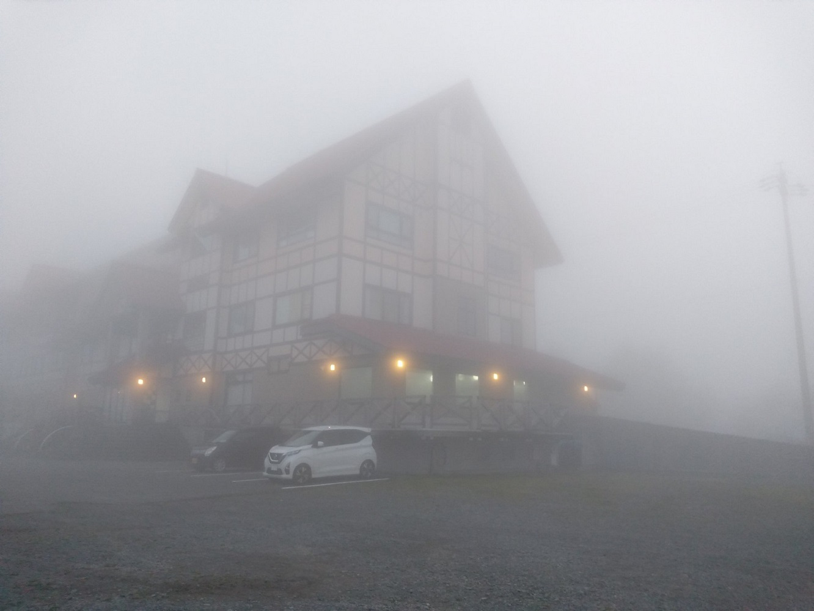</p>
<p>色々と問題があったようで，ハイランドしらびそから経営母体が変わってからどうなったんだろうと，そもそも変わる前を知らないのに少し観察してみましたが，スタッフの方々はやはり星が好きな人が多く，ホスピタリティが高い印象を受けました．従業員の方を観察しても，多分意味は無いのでしょうが…．夕飯も美味しい…が，メニューを見てもどれがどれかわからない笑．メニューが変更になって，存在しないメニューが記載されていることもあるとか．まあ山の上にありますからね．<br>夜20時頃になると，星空解説会が開かれます．外に出ると，なんと晴れているではありませんか．とはいえ晴れたりガスったりなので，眼視機材だけ出します．どこかから小学生くらいの団体も来ていたみたいで，近くにいた何人かに覗いてもらいました．なんだかんだでちゃんと宿に泊まって星空観察会に参加したのは初めてな気がするので，少しテンションが上がります．<br>ガスが出ていたというのもあるかもしれませんが，やはり乗鞍同様しらびその空は暗いです．関東のそこらの星空とは一段違いますね．ずっと眺めていたかったですが，お風呂が22時までで入るのを忘れていたので，泣く泣く観測会を抜け出してお風呂へ．お湯はかなり熱かった．戻ってくると，観測会も終了し，撮影している何人か以外は宿に戻っています．まだ晴れているので撮影の機材も出してみます．<br>風も少なく，快適な気温でしたが，とにかく結露がひどい．フードがあればなんとかなると思っていましたが全くそんなことはなく，FSQ も TOA も秒で曇ってしまいました．TOA の方は<a href="https://twitter.com/ShonanAstroPhot" target="_blank" rel="noopener">けーたろさん</a>に専用ヒーターを作っていただいたのですが，こちらを使っていてもあえなく撃沈．それだけひどい結露だったということですね．</p>
<p>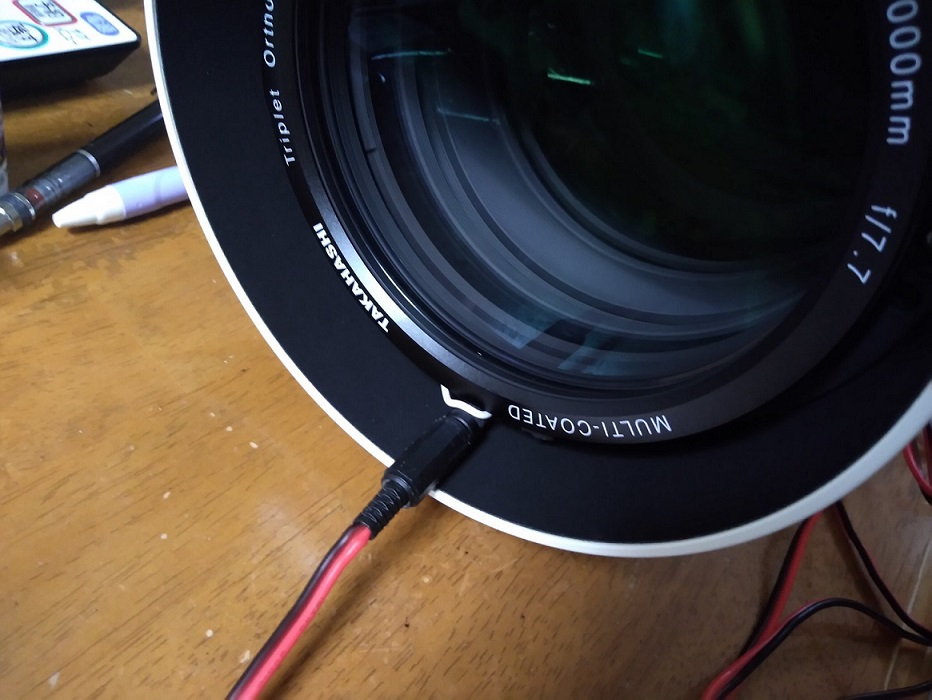</p>
<p>撮影は M33 を狙ってみました．APS-C だともうちょい焦点距離がほしいかなーと思いますが，赤ポチせずとも中央に向かった構造が面白い天体です．しらびそくらいの暗い空では，ファインダーでもしっかり見えます．</p>
<p>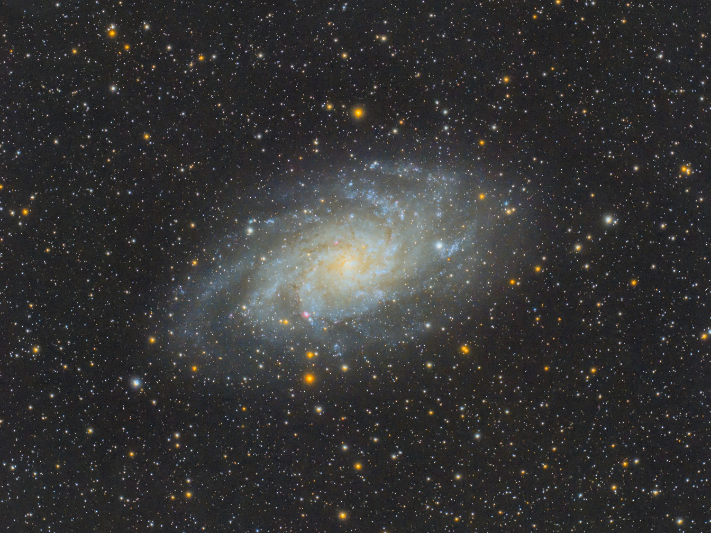</p>
<div style="text-align: center;">
「M33 さんかく座銀河」<br>
2022年9月24日～9月25日 長野県 しらびそ高原<br>
FSQ-85EDP+Flattener 1.01X<br>
QHY268C<br>
Gain 26/Offset 50/-20℃/180s*46<br>
Optolong UV/IR Cut 2''<br>
Total: 138min<br>
タカハシ EM-11 Temma2 Jr. + MGEN-3<br>
Adobe Lightroom CC / Photoshop CC / PixInsight<br><br>
</div>

<p>結露がひどい中撮影した &amp; フラットを撮らずトリミングしたので，こんな感じで．<br>一眼も出せばよかったですが，宿でぬくぬくしていて色々撮り逃しました．まあまた行けばいいか．<br>そんなこんなで帰りにはシーズン終わりの彼岸花を．こちらもまともに見たのは初めてな気がします．綺麗ですね．</p>
<p>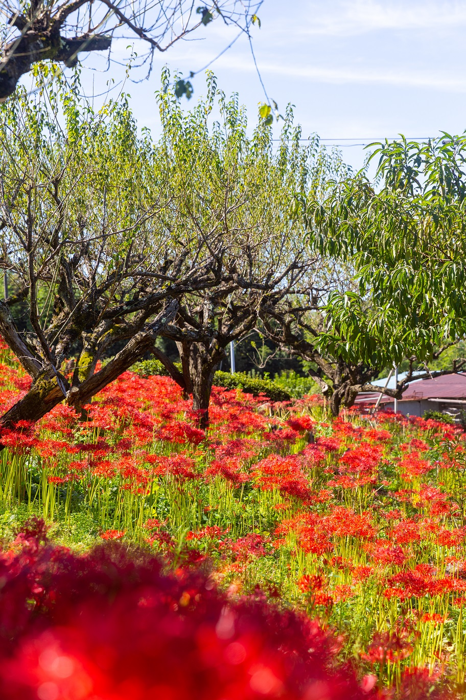<br>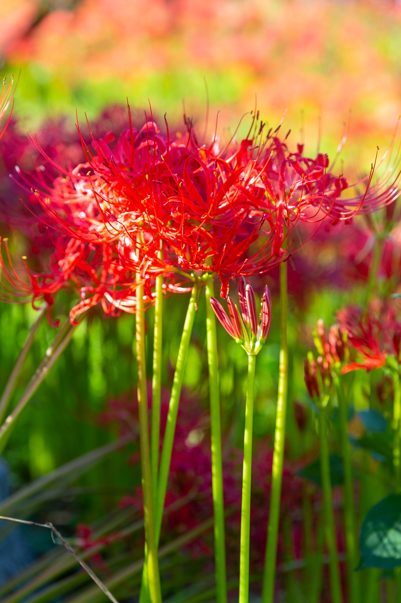</p>
<p>運転感覚を覚えるために行ったしらびそ．結局寄り道を含め2日で 850km 運転しました．帰宅後は疲労で視界を動かすと残像に黒いもやが見えました．<br>色々できなかったことも多かったので，また行きたいと思います．</p>
<h3 id="10月初め-五合目"><a href="#10月初め-五合目" class="headerlink" title="10月初め 五合目"></a>10月初め 五合目</h3><p>10月初めは記録的快晴に恵まれましたね．<br>僕はというと……</p>
<p>体調を崩しました．マヂ病み．しらびその疲れが出たのでしょうか．<br>38度ちょいくらいの発熱にお腹を下すという，なんか昨年末も似たような症状に見舞われたんですがなんなんですかね．ちなみに簡易検査キットで流行り病は陰性でした．</p>
<p>自分はこんななのに，知り合いの方々がみんな遠征に出ている．悔しくないわけがなかろう．ということでまずはなんとか病を気力で治します．ちなみに記録的快晴が終了した日にかなり回復しました．神も仏もないものか．<br>だがここで Windy を確認すると，月-火で富士山～伊豆半島周辺に晴れ間があるではありませんか．火曜に大事な発表も控えていましたが，資料をサクッと作って早速準備をします．直前の ECMWF17時更新でやはり五合目がいい感じなので，荷物をまとめて出発．これでだめだと本当に凹むので，あまり期待はせずに向かいます．<br>道中，小動物が5匹くらい，山の主みたいな鹿を3頭，普通の鹿を2頭くらい見ました．あんな立派な鹿が富士山周辺にいるとは思っていませんでしたので意外でした．<br>道中も雲が多く，到着しても雲多し．Windy 外したかぁと思いながらのんびり赤道儀を組み立てていたら，少しずつ雲がなくなっていきます．</p>
<p>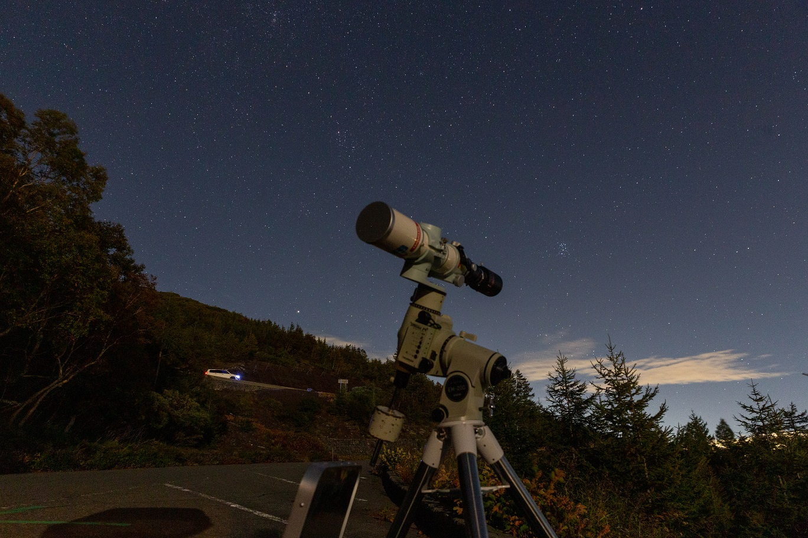</p>
<p>狙おうと思っていた M45 も見えてきました．本当は今年は狙わんでもいいかなと思っていたのですが，月没後から子午線通過までちょうどいいタイミングで狙える天体だった &amp; せっかく来たのに難しい天体で躓いてもつらいので，今回はこちらを撮ってみます．なんだかんだで冷却で撮ったこともなかったしね．</p>
<p>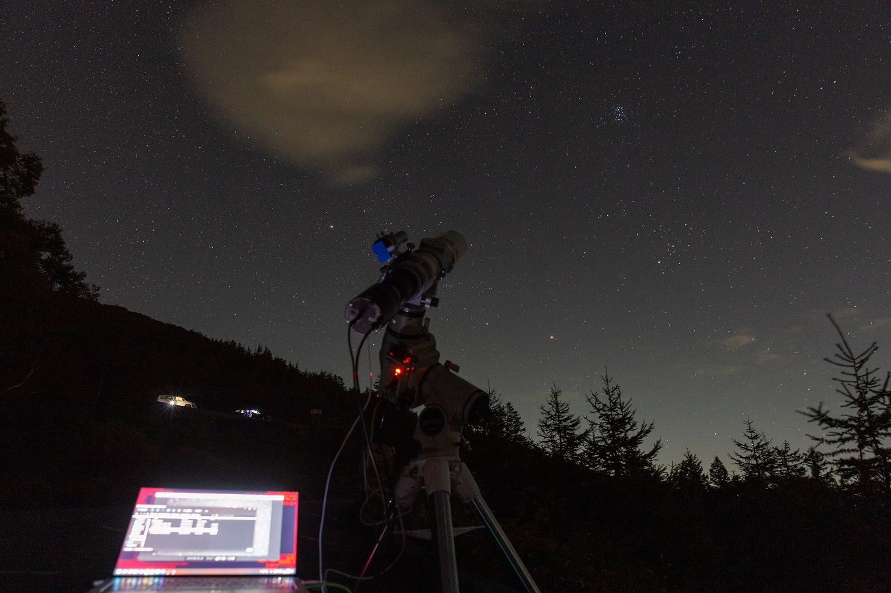</p>
<p>時々ちぎれ雲が飛んできますが，前半は昴にはあまりかからず．しかし一時間ちょいたった頃にピントをチェックするためにバーティノフマスクをつけたところズレています．どうやら最初からズレていたようです．何やってんだ．<br>ピントを修正して気を取り直します．</p>
<p>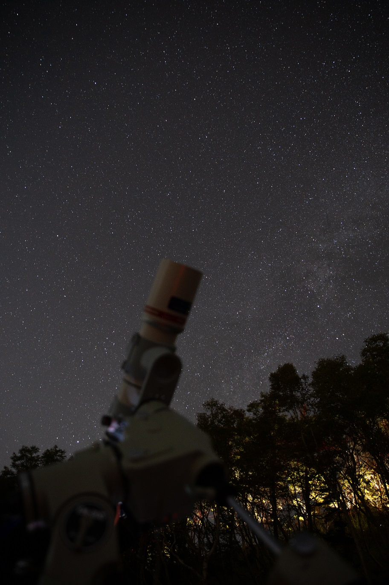</p>
<p>そんなこんなしていたら月も沈んで天の川もしっかり見えてきました．南の対象を狙っておいて何ですが，五合目の北の暗さはイイです．<br>ただ今回は富士山から吹き下ろしの強風が吹いていました．自分が機材を広げたところは木々のおかげか風向き的に絶妙に避けられていたのか微風程度でガイドにも全く影響がありませんでしたが，北を狙うために一番上で撮影していたら辛いことになっていたと思います．</p>
<p>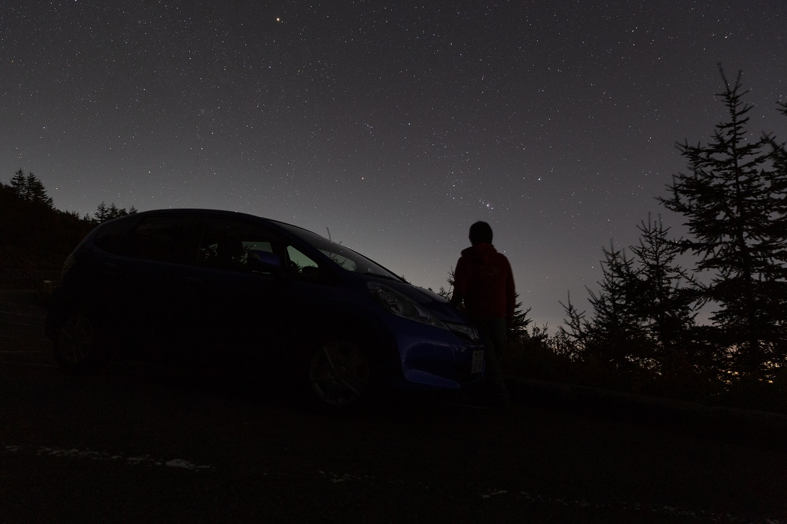<br>オリオンがいい感じに上ってきたので，愛車(家の車です)ともパシャリ．僕が遠征に出るようになって一気に走行距離が増えましたが，それでもまだ11年でようやく5万キロに到達しました．</p>
<p>2時頃になると，やばそうな筋状の高層雲に襲われました．3時まで粘ってだめだったら帰ろうと思ったのが運のツキ．いざ3時頃になると，また雲もなくなり先程以上に良い空になってしまい，薄明まで撮影コースとなりました．<br>手前(富士宮市街？)だけだったようですが，低層には雲海も出ていたようです．</p>
<p>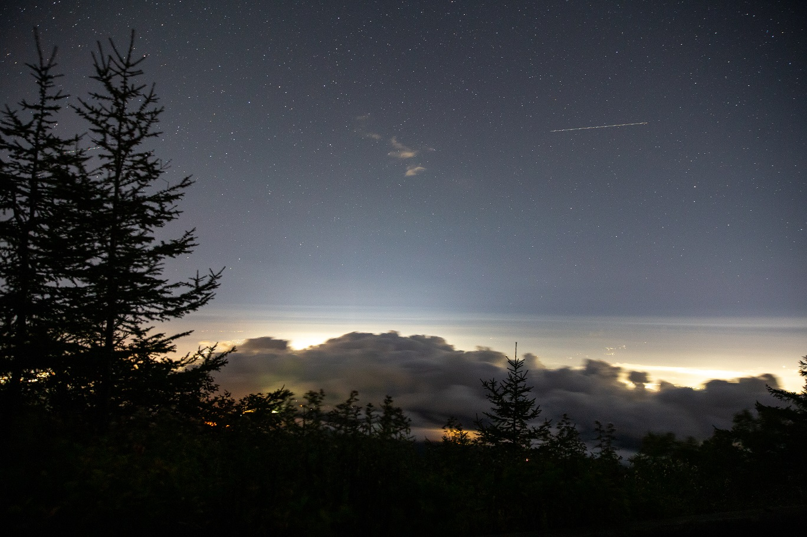<br>街明かり全部ではありませんが，光をある程度遮ってくれていました．</p>
<p>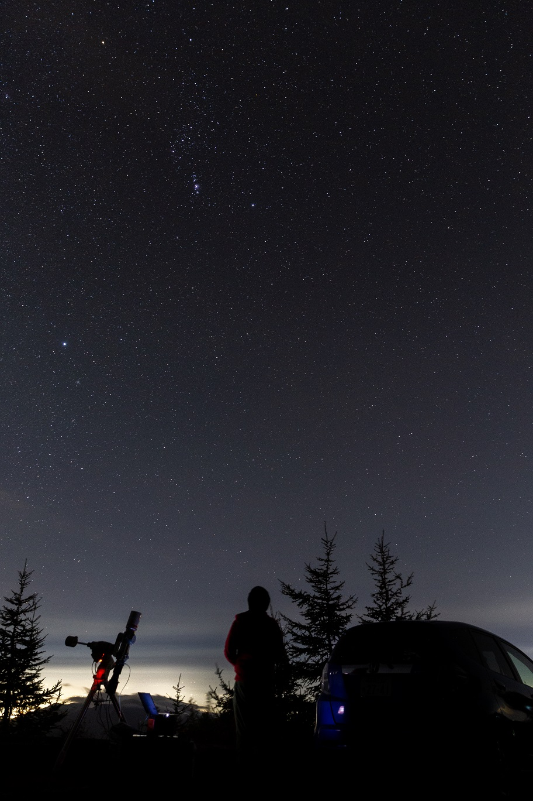<br>動画を見たりしながらゆったり過ごしていると昴もとうに子午線を超え，オリオンもあんなに高く．道路も混むので，急いで撤収して7時頃に帰宅となりました．<br>帰りに鹿は1頭も見ませんでした．</p>
<p>肝心の M45 を最後に載せておきます．</p>
<p>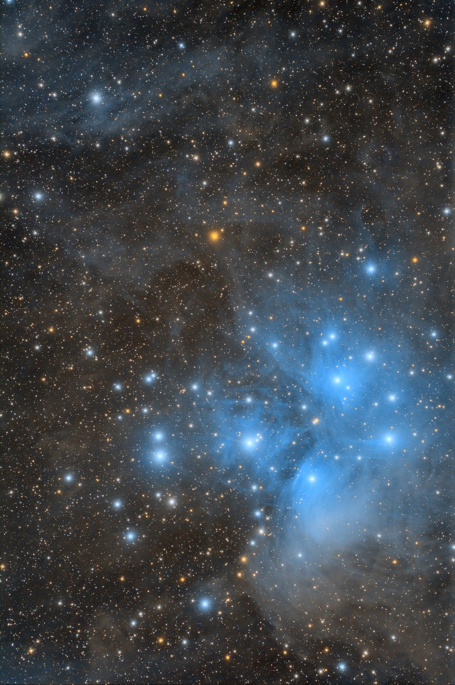</p>
<div style="text-align: center;">
「M45 昴」<br>
2022年10月03日～10月04日 静岡県 富士宮口五合目<br>
FSQ-85EDP+Flattener 1.01X<br>
QHY268C<br>
Gain 26/Offset 50/-20℃/180s*89<br>
Optolong UV/IR Cut 2''<br>
Total: 267min<br>
タカハシ EM-200 TemmaPC Jr. + MGEN-3<br>
Adobe Lightroom CC / Photoshop CC / PixInsight<br>
<a href="https://www.astrobin.com/u7k1ii/" target="_blank" rel="noopener">AstroBin</a><br><br>
</div>

<p>貴重な記録的快晴を無駄にしましたが，転んでもただでは起きぬです．<br>北側の分子雲が好きなので，こんな感じの構図にしてみましたがいかがでしょうか．<br>最近話題になっている「PSF Signal Weight」も使ってみました．詳しくは<a href="https://masahiko.me/integration-new-method/" target="_blank" rel="noopener">丹羽さんブログ</a>や<a href="https://snct-astro.hatenadiary.jp/entry/2022/09/17/232845" target="_blank" rel="noopener">だいこもんさんブログ</a>を参照ください．微妙なフレームでもソフト側でしっかり活用してくれるのは嬉しいですね．おかげで像やS/Nの悪化等はあれど4時間半近いデータを利用できました．</p>
<p>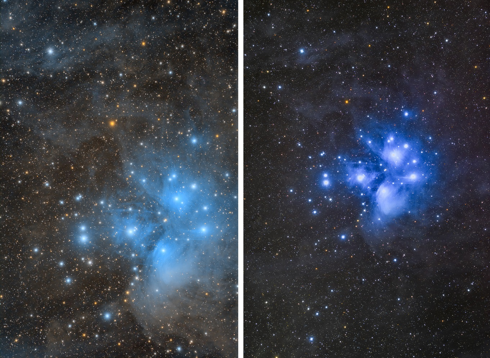</p>
<p>前回 6D で撮ったものと比較してみました．前回のも好きですが，今回のほうが周辺の分子雲の色が青と分離していて冷却 CMOS っぽいイメージになったのかなと思います．<br>皆さんはどちらが良いと思いますか，良ければコメントくださいね（定期）</p>
<p>それでは，また新月期に．</p>

		
	</div>
	<footer class="article-footer">
		<a href="https://twitter.com/intent/tweet?text=9%E6%9C%88%E3%81%97%E3%82%89%E3%81%B3%E3%81%9D%EF%BC%8C10%E6%9C%88%E5%89%8D%E5%8D%8A%E4%BA%94%E5%90%88%E7%9B%AE｜%E3%81%BB%E3%81%97%E3%82%88%E3%81%BF%E5%A4%A7%E5%AD%A6%E7%94%9F%E3%81%AE%E3%83%96%E3%83%AD%E3%82%B0&url=http://dabokun.github.io/2022/10/04/00000066-2022-09-10/" class="twitter-share-button" target="_blank" title="Twitter"></a>
		<script async src="https://platform.twitter.com/widgets.js" charset="utf-8"></script>

		<div id="fb-root"></div>
		<script async defer crossorigin="anonymous" src="https://connect.facebook.net/ja_JP/sdk.js#xfbml=1&version=v4.0"></script>
		<div class="fb-share-button" data-href="http://dabokun.github.io/2022/10/04/00000066-2022-09-10/" data-layout="button_count" data-size="small"><a target="_blank" href="https://www.facebook.com/sharer/sharer.php?u=https%3A%2F%2Fdabokun.github.io%2F&amp;src=sdkpreparse" class="fb-xfbml-parse-ignore">シェア</a></div>
	</footer>
	<footer class="entry-footer">
		<div class="entry-meta-footer">
			<span class="category">
				
  <div class="article-category">
    <a class="article-category-link" href="/categories/expedition/">遠征記</a>
  </div>

			</span>
			<span class=" tags">
				
  <ul class="article-tag-list"><li class="article-tag-list-item"><a class="article-tag-list-link" href="/tags/photography/">写真</a></li><li class="article-tag-list-item"><a class="article-tag-list-link" href="/tags/astrophotography/">天体写真</a></li><li class="article-tag-list-item"><a class="article-tag-list-link" href="/tags/expedition/">遠征記</a></li></ul>

			</span>
		</div>
	</footer>
	
	
<nav id="article-nav">
  
    <a href="/2022/10/28/00000067-gachiten2022/" id="article-nav-newer" class="article-nav-link-wrap">
      <strong class="article-nav-caption">Newer</strong>
      <div class="article-nav-title">
        
          天リフ超会議「ガチ天2022」に出演しました
        
      </div>
    </a>
  
  
    <a href="/2022/09/04/00000065-2022-07-08/" id="article-nav-older" class="article-nav-link-wrap">
      <strong class="article-nav-caption">Older</strong>
      <div class="article-nav-title">
        
          星ナビ掲載，キャンプと久々乗鞍
        
      </div>
    </a>
  
</nav>

	
</article>


<section id="comments">
	<div id="disqus_thread">
		<noscript>Please enable JavaScript to view the <a href="//disqus.com/?ref_noscript">comments powered by
				Disqus.</a></noscript>
	</div>
</section>

    </div>
    <div class="mb-search">
  <form action="//google.com/search" method="get" accept-charset="utf-8">
    <input type="search" name="q" results="0" placeholder="Search">
    <input type="hidden" name="q" value="site:dabokun.github.io">
  </form>
</div>
<footer id="footer">
	<h1 class="footer-blog-title">
		<a href="/">ほしよみ大学生のブログ</a>
	</h1>
	<span class="copyright">
		&copy; 2023 astr0dab0<br>
		Modify from <a href="http://sanographix.github.io/tumblr/apollo/" target="_blank">Apollo</a> theme, designed by <a href="http://www.sanographix.net/" target="_blank">SANOGRAPHIX.NET</a><br>
		Powered by <a href="http://hexo.io/" target="_blank">Hexo</a>
	</span>
</footer>
    
<script>
  var disqus_shortname = 'astr0dab0';
  
  var disqus_url = 'http://dabokun.github.io/2022/10/04/00000066-2022-09-10/';
  
  (function(){
    var dsq = document.createElement('script');
    dsq.type = 'text/javascript';
    dsq.async = true;
    dsq.src = '//go.disqus.com/embed.js';
    (document.getElementsByTagName('head')[0] || document.getElementsByTagName('body')[0]).appendChild(dsq);
  })();
</script>


<script src="//ajax.googleapis.com/ajax/libs/jquery/2.0.3/jquery.min.js"></script>


<link rel="stylesheet" href="/fancybox/jquery.fancybox.css" media="screen" type="text/css">
<script src="/fancybox/jquery.fancybox.pack.js"></script>


<script src="/js/script.js"></script>
  </div>
</body>
</html>